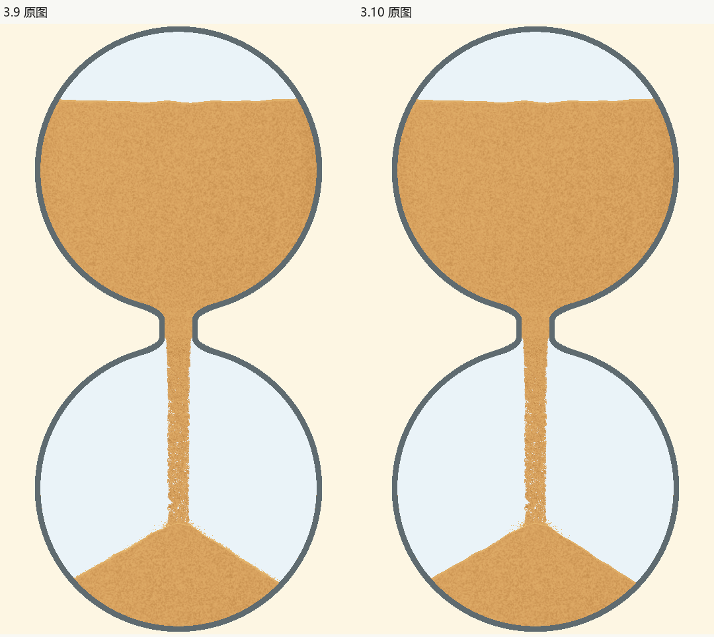

3.10：落点贴坡与停稳
本轮按执行计划试作细粒明暗与落点铺开。材质小样在正常尺寸下没有明确收益，已拒绝；正式保留3.9材质，仅修复飞溅触坡后反复离面和被涨堆重新抬起的问题。整体画面变化很小，本版属于落点局部连贯性修复。当前状态见审核决定及源码和证据登记。
保留的实现
复用现有真实撞击产生的飞溅，首次抛射保持。颗粒一旦接触沙面，继续沿同一接触表滑动并按原阻尼减速，不在下一帧重新作自由落体；接触期仍沿用0.5秒，停稳仍沿用0.28秒。涨堆完全埋住的旧颗粒原地停稳，交给既有遮挡吸收，不能抬回表面复活；表面退远时释放回原抛物线，避免瞬间下跳。
主程序、短粒渲染器、主粒子发射及轨迹、颈宽、玻璃、计时和100%沙量均保持3.9。飞溅存活数量会随正确结束接触而改变，没有调低发射密度，也没有增加一套装饰粒子。

实际动态
5秒原速实录 · 50秒原速实录，包含暂停、恢复、末1%、余砂和落定。来自真正隐藏PC窗口及独立设置目录，无插帧。审阅以列明的实际连续解码窗口和正常尺寸画面为准，不声称完整原速播放所有视频。
50秒连续落点裁图 · 5秒连续落点裁图 · 1秒亮弧相邻复查 · 5秒结束与落定 · 50秒结束与落定 · 六配色及粗细两端。


检查与限制
| 检查 | 实际证据与边界 |
|---|---|
| 接触模型 | 先保留修前失败：下坡粒子离面、涨堆把旧粒上抬。新8项覆盖贴坡、埋藏、暂停dt0、两实现一致、首次抛射、退面、左右有限行程与停稳寿命。D40的代表性纯模型对照中，旧模型最长离面3.24px；候选离面近0，额外滑动约0.06～0.31D。此数字不是所有实际粒子的实测分布，也不是自然度判据。 |
| 保护比较 | 3.9同条件55张阶段图：只允许飞溅数组、计数及统计变化，主粒子、沙量、几何、其他效果、时钟、双随机状态保持；变化区域外像素检查继续使用原蒙版和阈值。 |
| 相邻表现 | 低55、高17、回退4、浓淡端点4；6组真实主粒子轨迹，5/50实录及近满接收负对照。独立复审正常尺寸、连续窗口、1秒埋藏亮弧与暂停收尾；不将粒子数或非空图替代外观。 |
| 源码及发布 | 只改版本与落点模块；还原新接触helper及两处调用后，其余AST精确恢复3.9。发布反例25项、原出口膨胀/粗档实心杆负例继续拦截；旧黄金轨迹指纹不重存，它用于历史存储等价，未拿来宣称本次接触轨迹不变。 |
最终同配置PC工作量原始样本与预算结果记在发布登记和证据包中。其范围为更新、绘制和GPU等待的工作耗时，排除取图编码，不代表实屏或Android FPS，不据单场数值声称稳定提速。
主动拒绝与保留问题
对抗性审核记录保留材质被拒小样、接触模型修前失败与复审范围。已知5秒首次涨堆偏快仍是既有P2；原有直束外形及细孔仍保留。本轮没有改变体积到堆形的模型，没有将局部修复解释为整体美术目标已全部完成。
未检查Android、MuMu、音频、真实屏幕刷新、10小时全程及全部配色的完整动态。返回版本记录。